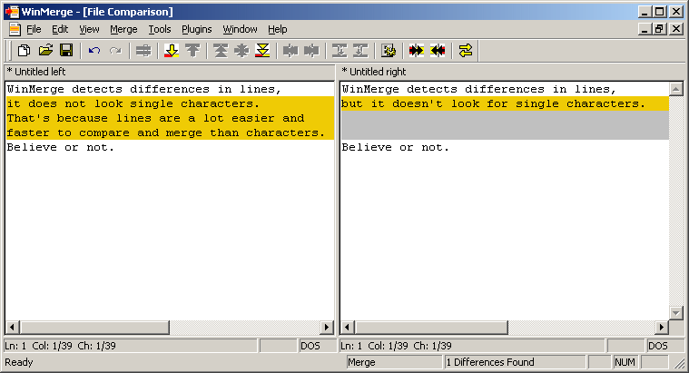

Introduction chapter says WinMerge finds and shows differences between files. So user compares two files one knows are different and gets surprised - WinMerge tells there is 5 differences, but there are more different words in one line! What is going on with WinMerge?
Most natural way to show differences in text would be to show different characters and different words. And let user to check and copy these differences one by one. Like with spellchecker. That would be nice and easy if there are no many differences. But if we have long files with a lot of differences handling differences would become tedious work. Computers can handle that but not humans. So we need simpler and easier way to handle differences.
Solution is to forget single letter or word differences and use lines. Lines are basic units for many compare and text file handling tools. WinMerge's compare engine uses also lines as basic unit.
Handling lines is a lot easier. If two texts to compare have few sigle different lines we are happy to handle them. But what if we have many consecutive different lines we don't want to copy those lines one by one.
So we combine those consecutive different lines to single block. Now we can handle this one block (consisting of several lines) with one command.
This block of different lines is called "difference" in WinMerge.
Now we need simple example to get this all combined:
Example 1. Two files with multiple differences
File1:
WinMerge detects differences in lines, it does not look single characters. That's because lines are a lot easier and faster to compare and merge than characters. Believe or not. |
File2:
WinMerge detects differences in lines, but it doesn't look for single characters. Believe or not. |
Those two texts contain several differences in lines and several different lines, but only one difference that WinMerge shows for user. For WinMerge, difference is lines 2-4 in first file and line 2 in second file. So WinMerge can show those lines as difference.
In example 1 there are 3 different lines in file1 and 1 different line in file2. In WinMerge differences must always have same amount of lines in both files. So WinMerge must add 2 empty lines to file2 so that both files have 3 different lines. We call these added empty lines as "missing lines" since they really don't exist in file2. Screenshot shows it:

If text is typed or copy-pasted to missing lines they become real lines.
So how those two files in example 1 can be made identical? Simply copying different lines from file to another. No need to care about single different characters, character offsets etc. Just lines.
But copying every single line is still a lot of work. Like already mentioned WinMerge creates differences from sets of different files. Instead of copying single lines we can copy these differences. It is a lot easier and faster to copy 5 differences than 100 lines.
But what about missing lines when merging? What happens to them? As mentioned earlier missing lines are not real lines. When copying lines WinMerge totally ignores missing lines. In example 1 we have missing lines:
Copy difference from file1 to file2 : WinMerge copies first line in difference in file2 with line in file1. Then WinMerge replaces two missing lines in file2 with real lines in file1.
Copy difference from file2 to file1 : WinMerge copies first line in difference in file1 with line in file2. Then WinMerge would copy two missing lines from file2 to file1. But missing lines are not real lines and do not exist in files. So WinMerge removes two lines from file1.